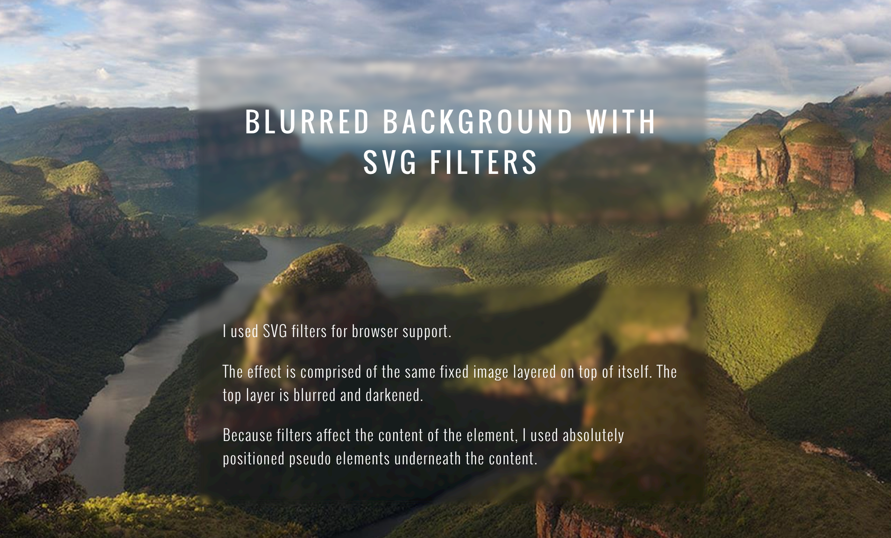

SVG Can Do That?!?
Brenna O'Brien / @brnnbrn
the SVG u know and
resolution independent
great for icons and logos
-
XML based
= easy to manipulate with CSS & JS.icon:hover { fill: goldenrod; }
we SVG because:
anatomy of an SVG element
=
viewBox Rules Everything Around Me
(V.R.E.A.M.)
more than just vector shapes
there are 80 valid SVG elements
including...
<text>
<image>
<linearGradient>
<mask>
<filter>
<animate>
<switch> (lolwut)
SVG can do...
editorialized text
editorialized text
<tspan>, works like<span>fine grained positioning with
x,y,dx&dyclass any SVG element for custom CSS
editorialized <text>
editorialized text
<svg viewBox="0 0 300 200">
<text>
<tspan x="0" dy="1em" font-size="53">what is</tspan>
<tspan class="love" x="0" dy="0.8em" font-size="84">love</tspan>
<tspan x="0" dy="1em" font-size="28">oh baby don't</tspan>
<tspan x="0" dy="0.9em" font-size="48">hurt me</tspan>
</text>
</svg>
text { fill: #fff;}
.love { fill: #FF6666;}
responsive!
editorialized text

responsive SVG
viewBox + flexible container
curved text
curved text
1. create a path
curved text
2. put text on path
<defs>
<path id="arc" d="M82.372,165.969 c44.126-35.084,60.236-50.782,150.325-50.782s131.802,28.198,158.194,62.77" />
</defs>
<text fill="#5D509D" width="500">
<textPath xlink:href="#arc" x="250" font-size="44" dy="100">
Are You Afraid
</textPath>
<!-- ...some more tspans... -->
</text>
<defs>
where you define re-usable SVG components
a trusty steed as we combine SVG techniques
SVG can do...
fancy fills
<linearGradient>
<linearGradient
x1="0" x2="100%" y1="0" y2="100%" >
<stop stop-color="hotpink" offset="0%"/>
<stop stop-color="goldenrod" offset="100%"/>
</linearGradient>
gradient fills
1. make it a fill with <defs>
<defs>
<lnearGradient id="fire">
<!-- ...gradient stops -->
</lnearGradient>
</defs>
<rect fill="url(#fire)" x="0" y="0" width="100" height="100"/>
gradient fills
2. fill unconventional shapes!
image fills
<pattern>
turns any SVG element into a fill
most fun with <image>
<pattern>
turns any SVG element into a fill
most fun with <image>
most fun with gifs
gif fills, you betcha!
image fills
<defs>
<pattern id="bowie" width="100" height="100"
patternUnits="userSpaceOnUse">
<image xlink:href="img/bowie.jpg" width="100" height="100"
preserveAspectRatio="xMidYMid slice">
</pattern>
</defs>
<path fill="url(#bowie)"
d="M98.2,17.305c-2.493-6.252-7.495-11.51-14.416-14.766C77.667-0.34,71.076-0.686,65.085,1.073 C59.096,2.832,53.71,7.626,50,13.168C46.291,7.626,40.905,2.832,34.916,1.073S22.334-0.34,16.217,2.539 C9.297,5.794,4.295,11.053,1.801,17.305c-2.493,6.252-2.504,13.511,0.638,20.73C9.161,53.477,49.787,89.719,50,90.338 c0.213-0.619,40.84-36.861,47.561-52.303C100.705,30.815,100.693,23.557,98.2,17.305z"
/>
V.R.E.A.M.
match <pattern> and <image>
width and height to viewBoxpatternUnits="userSpaceOnUse"
image fill hot tips:
-
<image> needs a width and height
-
preserveAspectRatio
to fill shape
image fill hot tips:
A Look At preserveAspectRatio in SVG
let's make a new thing
editorialized text + gradient fills

gradient text for all* the browsers!
sorrynotsorry,
-webkit-background-clip: text;
* actually sorry, < IE9
again! again!
SVG can...
fill text with gifs!!!
SVG can do...
image effects
SVG Portrait Studio
http://codepen.io/brenna/pen/ogXeyd/
SVG Portrait Studio
<image>
+
<radialGradient>
+
<mask>
like a cookie cutter
black fill = opaque mask
white fill = transparent masksee also <clipPath>
<mask>
<mask>
<defs>
<radialGradient id="gradient">
<stop offset="80%" stop-color="#fff"/>
<stop offset="100%" stop-color="#000"/>
</radialGradient>
<mask id="vignette" maskUnits="objectBoundingBox">
<ellipse fill="url(#gradient)" cx="365" cy="140" rx="90" ry="120" >
</ellipse>
</mask>
</defs>
<image mask="url(#vignette)" xlink:href="nero-head.jpg" width="200" height="240" preserveAspectRatio="xMidYMin slice" x="270" y="20"/>
filter effects
blur filter
<filter id="blur">
<feGaussianBlur stdDeviation="3" />
<feComponentTransfer>
<feFuncR type="linear" slope="0.7"/>
<feFuncG type="linear" slope="0.7"/>
<feFuncB type="linear" slope="0.7"/>
</feComponentTransfer>
</filter>
section:before {
filter: url(#blur);
}
SVG Instagram
http://www.creativebloq.com/netmag/how-go-beyond-basics-svg-filters-71412280
SVG Instagram
feTurbulence
noise
feGaussianBlur
feComponentTransfer
RGB channel adjustments
feDiffuseLighting
light source shadows
SVG can do...
animations
SVGs that draw themselves
Polygon PS4 Review
SVGs that draw themselves
long
stroke-dasharray
+
animated
stroke-dashoffset
SVGs that draw themselves
<svg viewBox="0 0 100 10">
<line x2="100" stroke-dasharray="100 100"
stroke-dashoffset="0" stroke="hotpink">
<animate
attributeName="stroke-dashoffset"
dur="2"
values="0; 100"
repeatCount="indefinite"
/>
</line>
</svg>
<animate>
most SVG attributes are <animate>-able
Animatable SVG attributesQ: Why not just <animate>
with CSS & JS?
A: 
SVG shape tweens
SVG shape tweens
<animate> a path's d attribute
<path fill="goldenrod">
<animate attributeName="d"
dur="2"
repeatCount="indefinite"
values="
M100,0 L200,100 L100,200 L0,100;
M100,50 L125,100 L100,150 L75,100;
M100,0 L200,100 L100,200 L0,100"
/>
</path>
there's even more...
go exploring
SVG Can
Do That
@brnnbrn / thanks!